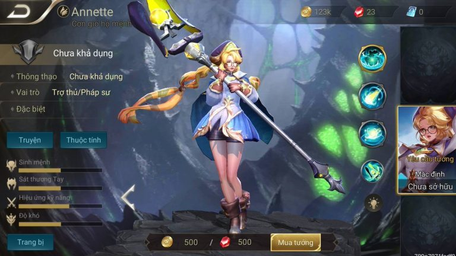

| Login | signup |
Berita |
Review |
Tutorial |
Heroes |

Garena AOV Thailand Merilis Hero Baru “Annette” Si Pemecah War,
Ini Bocoran Skillnya.
Berpotensi untuk berkembang lebih jauh Garena AOV Indonesia nampaknya
akan segera kedatangan hero baru yang memiliki paras cantik. Sudah rilis
secara resmi di Server Thailand, berambut kuning terang dan juga selalu
membawa tongkat besar kemana-mana hero ini terlihat seperti
penyihir/mage...